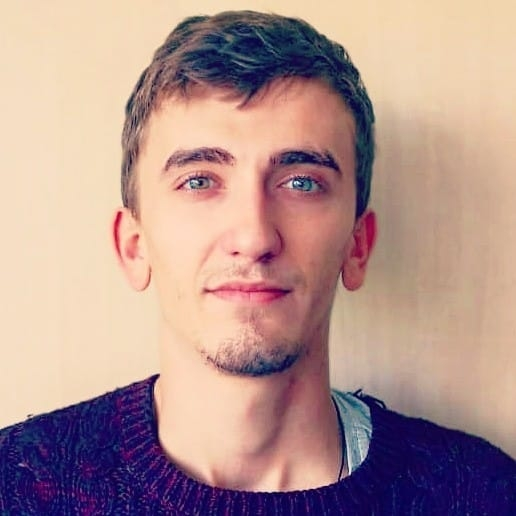

 Ciao a tutti sono Umberto, nato a Torino il 27 maggio 1994. Sono un grande amante dello sport in barticolare della mountain bike, dello sci e del calcio. Ho studiato Design della comunicazione qui a Torino presso lo IED successiavmente mi sono spostato a Milano per un master in comunicaione e marketing dello sport alla IULM. Ho lavorato per un bel pò all'internzo del Cus Torino.
Esperienze lavorative | Formazione |
| Gennaio 2022 Decathlon Italia Presente Assemblaggio e smontaggio bici e riparazioni meccaniche. Vendita prodotti (abbigliamento e componentistica) Responsabilità in casa. | 2018-2019 IULM - MILANO 64/70 MASTER IN MARKETING E COMUNICAZIONE DELLO SPORT Corsi svolti: Marketing dello Sport, E-sport, Neuro-Marketing, Strategia di Comunicazione. Porfessori: Pierluigi Pardo, Giorgio Terruzzi, e relatore della tesi Vincenzo Russo. Titolo tesi: “Organizzazone Eventi: il caso Just The Woman I Am” |
| Gennaio2021-Gennaio 2022 Fonderia mestieri srl Miglioramento del sito, coordinamento team di prodotto, relazioni con clienti e fornitori, addetto ai test per la certificazione (CE0477) le mascherine FFP1,2,3 | 2015-2018 IED - TORINO 94/110 LAUREA TRIENNALE IN DESING DELLA COMUNICAZIONE VISIVA Corsi sovolti: UX & UI, Social Media Management, Strategic Brand Managment, Organizzazione Eventi, Copywriting,Ppsi- cologia della Comunicazione e Digital Marketing Strategy. Titolo tesi: Uso e Comsumo Responsabile per Pubblicità Progresso |
| Lug2019-Giu2020 CUS TORINO MARKETING SPECIALIST Graphic designer e content creator per i social media, web designer, implementazione cartelle stampa per diversi progetti (in particolare, Just the woman I am e CNU); creazione del canale ufficiale Telegram del CUS Torino e del bot che semplifica il sito | |
| Dic2018-Mar2019 COFIDIS COMMUNICATION CONSULTANT Elaborazione della strategia di comunicazione del team COFIDIS per la “Classicissima” corsa ciclistica Milano-Sanremo. Team vincitore della competizione . | |
| Set2019-Nov2019 CUS TORINO COMMUNICATION & MARKETING INTERN Graphic designer & content creator per i social media - market research - implementazione delle campagne sponsorizzate sui social media - strategia di comunicazione. |


- MountainBike
- Sci
- Calcio